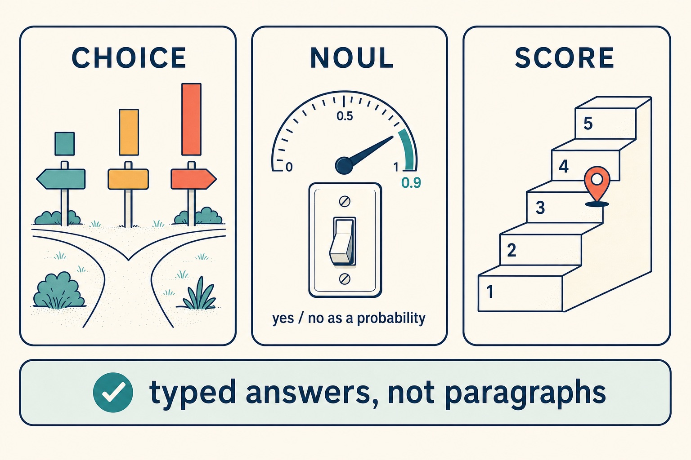

Level 1 101 · about 15 minutes
Decision models 101
A decision model reads natural language and returns typed answers with probabilities instead of generated text. You decide the possible answers ahead of time. The model tells you which one fits and how sure it is.
The one-paragraph definition
You send two things: a state (the text or JSON you want judged: an email, a support ticket, a dashboard as JSON) and one or more questions, each with its answer space spelled out. You get back one typed answer per question. Nothing else comes back: no explanation, no reply, no code. TypeSafe, which makes Jev, calls this class of model System One, after Daniel Kahneman's fast, intuitive System 1. Language models are the slow, deliberate System 2.
Three kinds of question

| Type | Asks | You define | You get back |
|---|---|---|---|
| Choice | Which of these fits? | Named options, each with a description | The top option, a probability for every option, and a confidence |
| Noul | Is this true? | A proposition, optionally what yes and no mean | The probability that the answer is yes (0 to 1) |
| Score | Where on this scale? | 2 to 10 ordered levels | A probability-weighted position that can land between levels, plus the distribution |
"Noul" is TypeSafe's name for a yes/no question answered as a probability. OpenAI's Decisions API calls the same thing a predicate.
What a call looks like
This is Jev's HTTP shape (POST /v1/systemone). The other decision models use the same idea with different field names; see adapters.
{
"model": "jev-1.13.0",
"state": "Help! My payouts have been failing for 3 days.",
"questions": {
"department": {
"type": "choice",
"instructions": "Which team should handle this?",
"criteria": {
"billing": "Payments, invoicing, refunds",
"technical": "Bugs, outages, integrations",
"sales": "Pricing, upgrades, new accounts"
}
},
"is_urgent": { "type": "noul", "instructions": "Does this convey urgency?" }
}
}{
"model": "jev-1.13.0",
"answers": {
"department": { "type": "choice", "choice": "billing",
"probabilities": { "billing": 0.88, "technical": 0.12, "sales": 0.0 },
"confidence": 0.81 },
"is_urgent": { "type": "noul", "noul": 0.95 }
}
}Notice what your code can do with that: route on choice, page someone if is_urgent is over a line, and send anything with low confidence to a reviewer. No parsing of prose, ever.
How it differs from a language model
| Decision model | Language model (LLM) | |
|---|---|---|
| Output | Typed answers you defined | Text (or JSON it writes) |
| Probabilities | Trained for calibration against outcomes | If you ask for one, it's a number the model writes down |
| Repeatability | Same request, same answer (Jev and the Decisions API both re-asked identically) | Re-asks vary: Haiku 5.5 gave identical answers on a third of re-asks |
| Speed | About 0.3–0.6 s per request hosted | Seconds to minutes |
| Price | Input tokens only, output free. Jev: $0.042 per million | Input and output. Haiku 5.5: $0.10 / $0.50 per million; Opus 5.5: $4 / $20 |
| Can it explain, write, plan, use tools? | No | Yes |
That last row is the point. A decision model is not a cheaper LLM. It's a different tool for a narrower job: bounded judgments, where the answers can be listed ahead of time and nobody needs an essay.
Probability, confidence and acting on them
A probability is the model's estimate for one answer. Confidence summarizes a whole Choice or Score distribution: it's 0 when every option is equally likely and 1 when one option has all the weight. For a Choice with n options and a top probability p, TypeSafe defines it as (n·p − 1) / (n − 1).
Calibrated means that across many answers given at 0.8, about 80% turn out right. That's a property of groups, not a promise about any single answer. Calibration is what makes a threshold mean something: "act alone above 0.8" becomes a statement about how often you'll be wrong.
What it's good at, and what it isn't
Good at
- Common-sense judgment on text: "is someone waiting on a reply?" (AUC 0.986 on a real inbox)
- Picking among named options: "is this a deadline, an event, an offer, or nothing?" (0.980)
- Matching: "is this message about the same matter as this open record?" (0.980)
- Many questions over one state in one request, for fractions of a cent
Not good at
- Measuring. Score ranks but doesn't size amounts (Spearman 0.28). Extract the numbers and do the arithmetic in code.
- Dates and math. Extract the parts and compare in code.
- Knowing what isn't in the state: who you know, what's already open, what you've ruled before.
- Reading your intent. It answers the question you wrote, literally.
- Generating anything. Use an LLM.
Where it sits
Both of our projects converged on the same shape. Each tier handles what it can and passes up what it can't:
| Tier | Speed | Job | Passes up when |
|---|---|---|---|
| Guards (code) | ~1 s | Safety only: stop or protect, never decide | Never; they act and log |
| Code | Per step | Extract state, list legal options, plan from data, verify outcomes, apply policies with computable answers | A step can't be found, or verification fails |
| Decision model | ~0.5–5 s, fractions of a cent | Narrow judgments with no computable answer | Its own checks fire (novelty, doubt), or the failure isn't transient |
| LLM | Minutes, woken by events | Inspects, decides, and fixes the cause in a lower tier | Real money, accounts, irreversible actions, preferences |
| Human | Hours | Preferences, approvals, gray-zone rulings | — |
Who makes them
As of October 2026: Jev from TypeSafe (hosted; the first of the class), OpenAI's Decisions API (gpt-6-luna, public beta), and open-weight options you can run yourself, from small ones like APUS-OpenJev (4B) and AWS's Strands Decider (2B) to 26–27B models such as Kev-27B that matched Jev on our tests (they need an 80 GB GPU). You can also ask a small general LLM like Claude Haiku 5.5 to fill in the same answer shapes. Each has a different cost, speed and quality profile; see Four ways compared.
Next: 201 covers how to phrase questions so the answers are worth having, and how to use the answers once you have them.